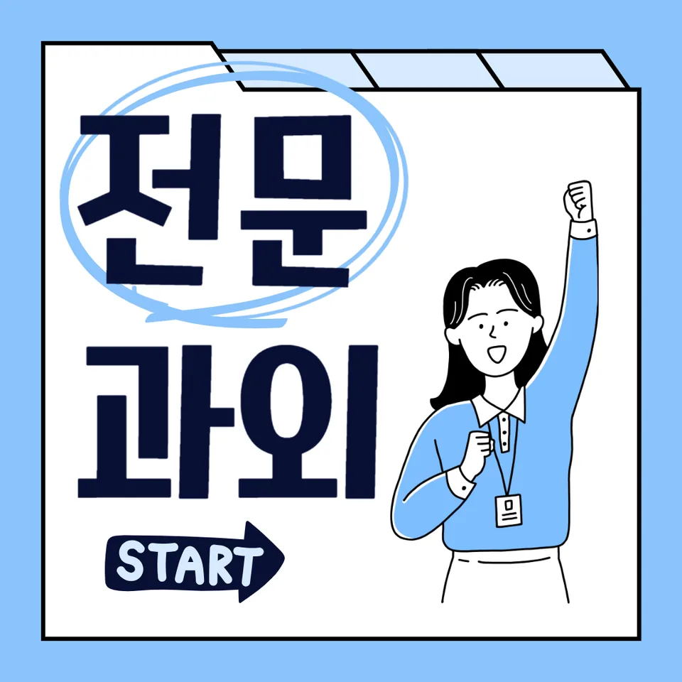

PageType : SUBJECT
URL : /경기도과외/의왕시과외/내손동과외/내손동영어과외/
지역 교육환경이 영어 학습에 미치는 영향
내손동영어과외를 찾는 학생들은 대체로 학교 수업 외 학습을 “언제, 어느 정도”로 가져가느냐에 따라 영어 학습 속도가 달라집니다. 같은 교과 진도라도 내신 시즌이 다가오면 학교에서는 독해 지문을 빠르게 처리하는 방식이 늘고, 학생은 듣기·읽기·어휘·문법 중 무엇을 우선해야 하는지 고민하게 됩니다. 내손동영어과외 현장에서도 초반에는 부담이 적다가, 중간부터는 과제 양과 평가 대비 압력이 함께 커지는 흐름이 자주 관찰됩니다.
지역 학습 분위기가 “문제를 많이 푸는 방식”으로 형성된 경우, 학생은 영어를 실력으로 보기보다 점수로만 해석하기 쉽습니다. 그러다 보니 듣기에서 틀린 원인을 문장 단위로 되짚기보다 정답 맞히기에 급해지고, 독해 역시 해석을 ‘한 번에 끝내야 하는 일’처럼 받아들이는 경향이 생깁니다. 내손동영어과외는 이런 굴절을 완화하기 위해, 학교에서 배운 문장 구조와 어휘가 다음 문제에서 어떻게 재사용되는지에 초점을 둡니다.
학교마다 달라지는 영어 평가 방식
내손동영어과외를 진행하면 학교별 영어 평가 방식의 차이가 가장 먼저 드러납니다. 어떤 학교는 독해의 문장 이해를 세밀하게 보면서 구문을 설명하듯 서술하는 문항이 있고, 다른 학교는 어휘·문법을 짧게 적용하는 형태가 비중을 크게 차지합니다. 그래서 같은 학습 시간을 투자해도 학생이 체감하는 “공부한 만큼 점수가 안 나온다”는 순간이 달라집니다.
또한 수행평가가 포함되는 학교에서는 영어 학습이 글쓰기·발표·자료 해석 같은 형태로 확장되며, 학생은 듣기와 읽기의 연결을 더 요구받습니다. 이때 학생은 처음엔 자신이 강한 영역(예: 독해)만 밀어붙이다가, 다른 영역에서 누적된 공백이 드러나는 시기를 만나곤 합니다. 내손동영어과외에서는 평가의 결이 다를 때 학습의 순서를 바꾸는 연습을 반복합니다.
학생들이 영어에서 어려움을 느끼는 시점
대부분의 학생은 영어에 흥미를 유지하다가, 특정 시점에서 갑자기 흔들립니다. 대체로 중간 정도의 단원부터 어휘가 늘고 문장 길이가 길어지면서, 독해 속도가 떨어지는 경험이 나타납니다. 내손동영어과외에서는 그때 “더 많이 외우기”로만 대응하지 않도록, 문장 이해의 기준을 다시 세우는 과정부터 다룹니다.
어휘 학습이 누적되는 구간에서 학생이 겪는 어려움은 단순히 단어를 몰라서가 아니라, 같은 어휘가 다른 지문에서 다른 의미로 쓰이는 패턴을 따라가지 못하는 데서 시작됩니다. 듣기에서도 유사한 현상이 나타나, 들리긴 하는데 다음 문장으로 이어지며 놓치는 경우가 생깁니다. 내손동영어과외는 오답을 ‘틀림’으로 끝내지 않고, 어떤 판단 지점에서 멈췄는지 확인하며 회복 경로를 만듭니다.
학년 변화에 따른 영어 학습의 차이
학년이 올라가면 영어 실력은 단순히 양이 늘어서 좋아지는 방식이 아니라, 학습 부담의 성격이 바뀌면서 형성됩니다. 내신 범위가 넓어지고 수행평가 준비가 겹치면, 학생은 복습할 시간을 계산해야 합니다. 내손동영어과외에서는 학습 계획을 ‘시험 전 몰아가기’가 아닌, 학교 수업이 진행되는 동안의 누적형 구조로 설계합니다.
초기에는 문장 이해를 도와주는 구문 감각이 먼저 자리잡다가, 이후에는 문법을 ‘설명’하는 능력보다 ‘적용’하는 과정이 더 중요해집니다. 학생은 문법을 배울 때는 편해 보이지만, 실제 문제에서 조건(시제, 수식 관계, 지시어)이 함께 걸리면 다시 헷갈리기 쉽습니다. 그래서 내손동영어과외에서는 문법·구문·어휘가 한 문장에서 어떻게 동시에 작동하는지 경험하도록 흐름을 구성합니다.
내신과 수행평가를 함께 준비하는 방법
내손동영어과외에서 내신 준비는 독해 연습만으로 완성되지 않습니다. 수행평가가 있는 학교라면 학생이 글의 흐름을 잡는 능력, 근거를 찾는 태도, 스스로 문장을 점검하는 방식이 함께 길러져야 합니다. 그래서 ‘읽기-이해-요약-확인’처럼 학교에서 요구하는 결과물의 결을 따라가는 학습이 필요해집니다.
내신에서는 시험 범위가 고정되어 있어도 실제로는 문제 유형이 섞여 등장합니다. 학생이 자주 빠지는 지점은 정답을 맞힌 뒤 과정 없이 넘어가는 습관입니다. 내손동영어과외는 오답 노트를 단순 기록으로 두지 않고, 반복되는 실수의 유형(어휘 선택, 문장 구조 착오, 문장 의미 추정 실패)을 분류해 복습 흐름으로 연결합니다.
꾸준한 학습 습관이 만드는 영어 실력
영어 학습에서 공부습관은 단기간의 집중보다, 짧아도 일정한 리듬이 만들어내는 누적의 결과로 나타납니다. 내손동영어과외 학생들은 매일 같은 분량을 고집하기보다, 듣기와 읽기 비중을 주 단위로 조정하며 꾸준함을 유지합니다. 이때 핵심은 ‘매번 새로 시작하는 느낌’이 아니라, 이전에 했던 어휘·문장 구조를 다시 만나는 경험을 만드는 것입니다.
복습이 들어가면 학생은 오답을 통해 영어 실력이 성장하는 단계로 이동합니다. 처음에는 틀린 문장을 다시 읽는 데서 끝나지만, 시간이 지나면 왜 틀렸는지 원인을 찾고 다음 지문에서 같은 함정을 피하려는 태도가 생깁니다. 내손동영어과외는 이 과정을 자기주도학습의 형태로 정착시키는 것을 목표로 두고, 학생이 스스로 확인할 질문(무엇이 주어인가, 어떤 단어가 연결을 만들었나)을 남기도록 돕습니다.
복습과 오답 관리가 중요한 이유
오답 관리는 단순히 틀린 문제를 다시 푸는 활동이 아니라, 다음 시험에서 같은 조건이 나타났을 때 반응 속도를 높이는 작업에 가깝습니다. 내손동영어과외에서는 오답이 발생한 이유를 독해의 흐름(전개), 문법의 조건(시제·수식·관계), 어휘의 선택(유사어·관용) 중 어디에서 끊겼는지로 나눠 기록합니다.
시험 기간이 되면 학생은 시간 압박 때문에 복습을 줄이려 합니다. 그러나 그 순간 오답이 다시 출현할 가능성이 커져, 오히려 학습 효율이 떨어지기도 합니다. 내손동영어과외는 시험 패턴이 바뀌는 시기에도 짧은 복습을 유지해, 듣기와 읽기에서 놓치던 연결 고리(지시어, 대명사, 지문 내 반복 표현)를 재확인하도록 돕습니다.
- 학교 시험 범위와 학습 계획이 연결되고 있는지 확인합니다.
- 독해·문법·어휘를 분리하지 않고 함께 학습하는 습관을 기릅니다.
- 오답의 원인을 분석하고 반복되는 실수를 줄이는 과정을 이어갑니다.
- 정기적인 복습으로 학습 내용을 장기 기억으로 연결합니다.
영어 학습에서 확인해야 할 핵심 요소
내손동영어과외를 통해 점검해야 할 요소는 여러 가지처럼 보이지만, 실제로는 몇 가지가 반복됩니다. 첫째, 학생이 독해에서 ‘문장 이해’를 어떻게 구축하는지입니다. 문장을 읽을 때 구문을 훑고 의미를 연결하는 습관이 생기면, 새로운 지문에서도 빠르게 적용됩니다.
둘째, 듣기와 읽기의 균형입니다. 듣기에서 문장이 끊겨 들리면 학생은 문장 전체의 구조를 놓치기 쉬워지고, 읽기에서도 같은 이유로 해석이 흔들립니다. 셋째, 시험 대비 학습 패턴의 변화입니다. 시험이 가까워지면 시간 활용이 중요해져서 학습은 더 촘촘해지지만, 그럴수록 복습과 오답이 약해지면 영어 실력의 상승 속도가 둔화됩니다. 내손동영어과외는 이런 흐름을 잡기 위해 학생의 공부습관을 관찰하고, 자기주도학습이 자리 잡는 단계에서 스스로 계획을 조정하도록 연결합니다.
마지막으로, 어휘 학습이 누적되는 방식과 구문이 문장 속에서 경험으로 남는 과정을 확인합니다. 어휘를 단어장 형태로만 다루면 독해에서 바로 쓰이지 않아서 불안이 생깁니다. 문법도 규칙을 아는 것보다 실제 문장에 적용하는 경험이 쌓일수록 자신감이 형성됩니다. 이 자신감은 ‘정답을 맞혀서’가 아니라, 학생이 자신의 오류를 설명하고 수정하는 능력으로 유지됩니다.
자주 묻는 질문
영어 학습은 언제부터 체계적으로 준비하는 것이 좋을까요?
수업만 따라가는 시기에서, 어휘와 독해의 연결이 흔들리는 시점부터 체계가 필요합니다. 특히 학교 내신 범위가 확장될 때 학습 계획을 고정하고 복습 루틴을 먼저 세우는 편이 안정적입니다.
학교 내신과 모의고사는 어떻게 함께 준비해야 하나요?
내신은 수행평가 요소와 평가 방식에 맞춰 독해·문장 이해·오답 복습을 우선하고, 모의고사는 시간 배분과 문제 유형 대응 흐름을 보완하는 방식으로 나눕니다. 둘 다 오답을 분류해 다음 학습에 반영하는 과정이 공통입니다.
영어 독해 실력은 어떤 과정으로 향상될 수 있나요?
문장 구조를 먼저 잡고(구문 감각), 그 다음에 어휘 의미를 연결하며, 마지막에 지문 전체의 전개를 확인하는 단계가 반복될 때 독해가 안정됩니다. 내손동영어과외에서는 오답에서 끊긴 지점을 확인해 다음 지문에 적용하는 연습을 합니다.
어휘와 문법은 어떤 순서로 학습하는 것이 효과적인가요?
먼저 문장 속에서 어휘가 어떤 역할로 쓰이는지 경험한 뒤, 그 문장을 설명하는 방식으로 문법을 붙이는 흐름이 효율적입니다. 문법을 ‘설명’만 하고 끝내면 시험에서 적용이 약해질 수 있어, 구문·문장 이해와 같이 다룹니다.
공부 습관을 꾸준히 유지하려면 무엇이 중요할까요?
학습량보다 리듬이 중요하고, 매번 새로 시작하지 않도록 복습을 최소 단위로 유지해야 합니다. 오답을 복습으로 되돌리는 과정이 반복되면 자기주도학습이 자리 잡고, 학생이 자신의 학습 상태를 점검할 수 있게 됩니다.
